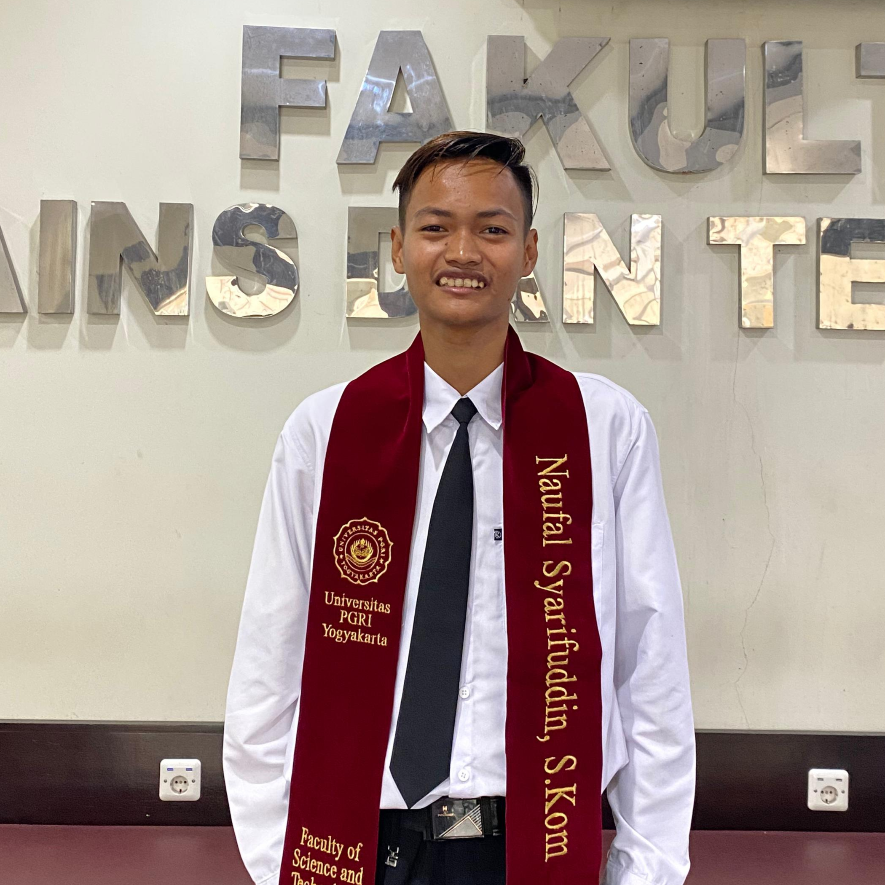

Para Pendiri
Dibalik ArtaPage terdapat tim yang berdedikasi tinggi untuk memajukan UMKM Indonesia.

Rizal Fahri
Founder & CEO
Seorang pengembang web yang memiliki visi besar untuk membantu pengusaha lokal. Rizal percaya bahwa teknologi harus menjadi solusi, bukan beban bagi para pejuang UMKM.

Naufal Syarifuddin
Co-Founder & Creative Director
Dengan latar belakang desain grafis dan UI/UX, Arta memastikan setiap website yang lahir dari ArtaPage memiliki estetika premium yang mengangkat nilai jual brand pelanggan.